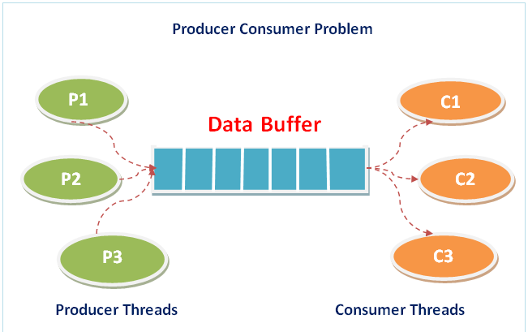

What is Producer Consumer scheduling Algorithm?
The Producer-Consumer scheduling algorithm is a concurrency problem that involves two types of threads: producers and consumers. Producers generate data and put it into a shared buffer or queue, while consumers retrieve data from the buffer and process it.
The goal of the Producer-Consumer algorithm is to ensure that producers do not produce data if the buffer is full, and that consumers do not consume data if the buffer is empty. This is achieved through synchronization mechanisms such as locks, semaphores, or monitors.
There are several variations of the Producer-Consumer algorithm, each with its own synchronization mechanisms and strategies for managing the buffer. One common approach is to use a circular buffer with two pointers: a read pointer and a write pointer. The write pointer is advanced by the producer when it adds data to the buffer, and the read pointer is advanced by the consumer when it retrieves data from the buffer.
Why do we need Producer Consumer Algorithm?
Producer Consumer is important because:
- The producer-consumer scheduling algorithm is used in situations where there is a need to coordinate the work of two or more processes that are working concurrently. The algorithm is designed to ensure that the producer process and the consumer process work together in a synchronized manner, without one process overwhelming the other or causing delays.
- It is used to ensure that the producer process does not overwhelm the consumer process with too much data to process, while also ensuring that the consumer process does not starve for data.
- It is used to coordinate access to this shared resource, ensuring that producers and consumers do not interfere with each other while accessing the shared buffer.
Various Producer Consumer Scheduling Algorithms
Semaphore-based Producer-Consumer Algorithm:
In this algorithm, a semaphore is used to control access to a shared buffer between a producer and a consumer. The producer can produce items and add them to the buffer, and the consumer can consume items from the buffer. The semaphore is used to ensure that only one process can access the buffer at a time. When the buffer is empty, the consumer blocks until the producer adds an item to the buffer. Similarly, when the buffer is full, the producer blocks until the consumer consumes an item from the buffer.
Monitor-based Producer-Consumer Algorithm:
In this algorithm, a monitor is used to control access to a shared buffer. The monitor ensures that only one process can access the buffer at a time. The producer can produce items and add them to the buffer, and the consumer can consume items from the buffer. When the buffer is empty, the consumer waits until the producer adds an item to the buffer. Similarly, when the buffer is full, the producer waits until the consumer consumes an item from the buffer.